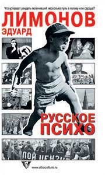

Эдуард Лимонов • Русское психо • вне серий • 11.09.2003

В своих тюремных эссе Эдуард Лимонов рассуждает о притягательности и отчаянии террора, солдатах, бегущих с оружием из российских воинских частей, взрывоопасной энергии диких девочек, национальных особенностях следственных действий и многом другом. Писатель сравнивает христианскую и исламскую культуры, подъезды и свалки, харизматических лидеров и культовых писателей разных стран и эпох. Каталогизирует свой яркий жизненный опыт и делает выводы, которые наверняка заставят спорить с ним очень многих.
Пресса
Владимир Березин. Рецензия на «Русское психо» Лимонова (Книжное обозрение)
Всё удалось. Дело в том, что Лимонов позёр, и в том мире, где главное поза, у него всё случилось. Можно помирать, чтобы не испортить биографию старостью. Но в этих двух книгах он вернулся к тому, с чего начинал, к Дневнику неудачника.
Что тут самое странное Лимонов обращается отнюдь не к революционным массам. Он обращается к обывателю. Нет, на словах обывателя-филистёра Лимонов гнобит, чморит и мумукает. Поносит его и унижает обыватель в его эссе толстомяс, безмозгл. Берёза тупица, дуб осел, речка кретинка, облака идиоты, лошади предатели, люди мошенники… Лимонов при этом военный турист, не забывающий вставить как лыко в строку после упоминания половины географических пунктов и персонажей, даже если речь идёт о Карле XII, которого занесло в Приднестровье далёкого времени, тут же читателю: Я побывал в Бендерах на войне, летом 1992 года .
Точно так же обстоит дело и с ворохом профессий, которые он испробовал за много лет. Он разносил, резал, варил, парил. Но когда он восхваляет крестьянский труд или труд рабочего, бормоча и я, и я , словно лягушка-путешественница, вдумчивому читателю понятно, что это всё тоже туризм. Вроде путешествий того малоприятного усатого господина из телевизора, что пристаёт к честным гражданам других стран и, отнимая орудия труда, норовит кого-то побрить или поймать крокодила. Извечный крестьянский труд до самыя смерти, Марковна, до самыя до смерти совсем иное, нежели неделя на картошке.
Его потребитель сидит у телевизора и верит, не думая проверять. Ведь проверять больно и обидно. Когда у поверившего шальной пулей убили мать, когда умирают от недостатка медикаментов дети в воспеваемой тобой, писатель-политик, революции смотреть в глаза поверившему и проверившему тяжело. Пафоса не хватает нужно пересаживаться, как на Mad tea party.
А так всё правильно, недоверчивым справка и свидетели, и все кивают зачарованно глазами:
Всё-то наш писатель знает, всюду-то он побывал.
И всё оттого, что писатель Лимонов не вовремя посмотрел фильм «На последнем дыхании». А эстетика и чувства этого фильма навсегда остались там – в чёрно-белом пространстве и пространстве техник-колора, и чтобы Алжир уже забыт, а во Вьетнаме ещё не кончили. А посмотри подросток Савенко в нужное время «Андрея Рублёва» или «Зеркало», скажем, то кто знает, как сложилась бы судьба Щаповой де Карли, а также всей русской литературы. В раннем Лимонове есть что-то от неприкаянности и обид Маяковского. Или от интонации Всеволода Вишневского: «Подойти и сказать: “Отчего такая красивая баба – и не моя?”». А уж когда он сейчас начинает хвастаться постельными подвигами с юными девами, то окончательно становится беззащитен. Уже не как позёр, а как стареющий мужчина, что кричит в толпу, что может, всё получается, жизнь удалась. Вы меня слышите? Удалась! Сексуальность плавилась с политикой, как в примитивном пересказе Фрейда, – пошлом, вульгарном, и одно слово – примитивном. «Дневник неудачника» – лучшая вещь, написанная Лимоновым. Не рыхлые претенциозные романы, не воспоминания, выдаваемые за прозу, а короткие тексты, сплав стихов и знаменитых тургеневских стихотворений известно в чём, байки и побасенки. Тексты коротки, стиль выверен как в анекдоте. И в старых коротких текстах, и в новых есть странная особенность: когда Лимонов начинает говорить о точных материях, о классической истории, экономике, то несет великолепную безответственную чушь. Мне скажут, что он пишет это в тюрьме, проверить точность ему негде. Но, позвольте, вот цитата из Адама Смита на полстраницы, вот кусок из другого классика. Беда тут в том, что высказывания Лимонова безответственны, как речи Жириновского. Мировая история фантастична и схематична, похожа на дело рук банды троечников, а советы даются по любому поводу – от обустройства революции до рациона и семейного планирования. Но вот он рассказывает историю про то, как едет в поезде Красноярск – Барнаул. Он вдруг обнаруживает, что поезд полон узбеков, они прямо в вагонах делают плов, моются, играют в карты и, натурально, грабят друг друга. А Лимонов везёт, ни много ни мало, десять тысяч долларов в наволочке. Он сидит с бандитами и представляется им провинциальным учителем. На прощание они его напутствуют: «Смотри, Эдуард, учи хорошо». А на перроне его ждут два партийных товарища, один из которых (Лимонов этого пока не знает) работает на органы правопорядка. Это настоящая история, достойная прежнего «Дневника неудачника», роман, спрессованный в один длинный абзац, стихотворение в прозе, маленькое чудо.
Олег Тюлькин. Русская вещь вне себя. Рецензия на «Русское психо» Лимонова (Петербургский Час Пик # 46 [304])
Пройдет время, и исследователи современной литературы обязательно выделят в отдельную тему тюремную прозу Эдуарда Лимонова. У него уже есть харьковский, нью-йоркский, парижский циклы, есть яркие публицистические книги, но лефортовский период лидера российских нацболов – это нечто особенное. Один только факт семи книг за полтора года, написанных, заметьте, не в Доме творчества Союза писателей, а на тюремной шконке уже впечатляет! Можно надменно морщиться, говорить, что Лимонов давно не тот, пишет уже не так, постоянно повторяется. Но нельзя пренебречь вот чем: вдруг как-то незаметно и совершенно неожиданно для всех он превратился в мистика. Это особенно ощущаешь, читая две его последние книги – «Контрольный выстрел» и «Русское психо», изданные в один день (кстати, 11 сентября) московским издательством «Ультра.Культура». И «Выстрел», и «Психо» – сборники эссеистики на самые разные темы. Тут и девочки-бандитки, и кладбища, и деньги, и железные дороги. В своих «записках у изголовья» Лимонов не пытался реализовывать какую-то сквозную идею. Что вспоминаешь, о чем думаешь, оказавшись в экстремальных условиях русской тюрьмы? Да обо всем – то одна картинка промелькнет, то другая. Вспомнились девочки – пишешь о девочках, предстал перед глазами Музей имени Пушкина – значит, о музее.
Сквозной идеи нет – зато есть сквозная эмоция. Это символическое переживание смерти, происходящее в тюремной камере, при тотальном контроле за каждым, самым незначительным, движением. Большой Брат в облике надзирателя постоянно смотрит в телескрин дверного глазка. Выжить в таких условиях можно, лишь свив вокруг себя метафизический кокон. Зато оказавшись внутри, неожиданно начинаешь различать запредельные горизонты – как в старой байке о звездах, которые видны в полдень со дна колодца.
Несколько лет назад соратником Лимонова был парадоксальный антисистемный философ, блистательный стилист Александр Дугин. Лимонов частенько ворчал по поводу увлечений своего друга то «поповщиной, то бесовщиной», называл талантливым сказочником, а то и просто болтуном. Однако, прошло время и Лимонов незаметно (скорей всего, и для себя самого) стал… Дугиным. Сравните две большие цитаты, посвященные нашему национальному бессознательному, пресловутой русской ментальности.
Александр Дугин, «Русская вещь»: «Что-то копошится в чем-то, чтобы попасть куда-то. Одна неопределенность упрямо орудует в другой, чтобы достичь третьей. Это не психоанализ, не безумие, не банальный идиотизм. Просто в подвалах национальной души ворочается нечто, не имеющее названия, увертывающееся от света, отвергающее воплощение в форме».
А теперь Лимонов на ту же тему: «Такая картинка: помещение квартиры. Подслеповатые окна, скрытые рядами истлевших штор. На табурете сидит существо. «Это» пузато, на нем одежда – полубанный халат, а наполовину военная рубашка со сломанным погоном. Одна отечная нога в старой тапочке, другая – в сапоге, а рядом еще стоит туфля. Бугры жира видны повсюду, где предстает голая кожа. Лицо – полумужское, полуженское, злобно-апатичное. «Это» глухо ворчит и издает звуки недовольства, детского чмоканья, рычания. «Это» – русская душа, ментальность, если представить ментальность воплощенной в тело. Еще одна картинка. Опутанное жировыми полосами отвратительной трупной желтизны, все в сизых и кроваво-бурых жилах там, где отсутствует желтый жир, большое, очертаний сердца бьется нечто, некий орган в закоулке смрадных кустов. Близ рельсовых путей пригородной электрички. От НЕЧТО отходят жилистые сизые мясные сосуды, уходя в запыленную зелень. Сосуды дрожат и сотрясаются от каждого спазматического удара бегущей в них жидкости. А удары следуют как толчки. Нечто – возможно огромное сердце, возможно, желудок, а скорее нечто среднее между ними, вздрагивающий от притока кусков разложившейся пищи, либо от тока сгустков разложившейся несвежей крови, смешанной с алкоголем. Так мне видится русское психо. Почему так? Так увидел».
Шевелящееся, отвратительное, беспокойное нечто. Все неопределенное, все среднего рода, – что у Лимонова, что у Дугина. Страшновато – аж мурашки по коже бегут: а вдруг такая «русская вещь» как выйдет из себя, как схватит дубину национального бунта… Тут не то что клочки по закоулочкам, тут закоулочков не останется.
Узник замка Леф вынес беспощадный приговор: не такая уж русская душа щедрая, не такой уж русский человек добрый. Алкоголизм, темное, тусклое, сумеречное сознание, хаотические движения из ниоткуда в никуда – ей богу, не пора ли такое психо добить милосердным контрольным выстрелом?
Читая и «Выстрел», и «Психо», убеждаешься: Лимонов, уже десять лет как окончательно перебравшийся в Россию, так и остался «иностранцем в смутное время» (так назывался его роман, написанный в самый разгар перестройки). Эдуард Вениаминович обитает не внутри русской жизни, а вовне. Он – просвещенный колонизатор, миссионер, несущий неведомое религиозное учение дикому первобытному племени.
И как у всякого миссионера, у него есть свой духовник. Раньше на его роль безуспешно пытался претендовать эстетствующий и надменный Александр Дугин. Теперь лимоновским духовником стал никому неизвестный доселе Вадим Пшеничников из шахтерского городка Анжеро-Судженска. Очень странный персонаж, зарабатывающий на жизнь тяжелым физическим трудом, с легкостью оперирующий категориями индуизма и, шире, традиционалистской философии вообще. «Между мною и Пшеничниковым существует интенсивное общение, корреспондирование от одного к другому знаков и знаний. Он возник в моей тюрьме ровно тогда, когда у меня возникла необходимость в нем». Его письма в Лефортово, часто цитируемые в обеих книгах – это даже и не эпистолярный жанр в строгом смысле слова, это именно что мистико-религиозные трактаты. По прочтении их кажется: может, Лимонов просто выдумал этого самого Пшеничникова, может, на самом деле, письма надиктовал ему кто-то свыше?
Однако, как бы там ни было, Лимонов, брутальный материалист, по мнению многих критиков, заразивший отечественную литературную молодежь вирусом «грязного полупорнографического журнализма», на глазах превращается в религиозного философа. Буддийские песнопения, обжигающий ветер Алтая, Центр Азии, предвидения, предсказания, древние легенды. Лимонов прошел путь от безбашенного нью-йоркского панка до мрачного и безжалостного мистика, превратившись в этакого барона Унгерна современной литературы.